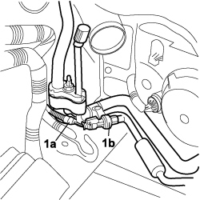
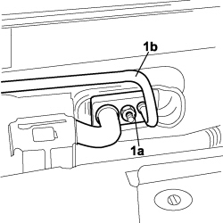
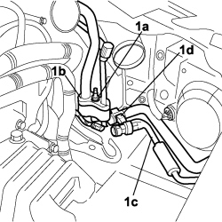
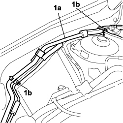

5040A57 EVAPORATOR INLET PIPE - R.R.
- Path
- Procedures > 50 AUXILIARY UNITS > 5040 AIR CONDITIONING CASING AND COMPONENTS > 5040A AIR CONDITIONING REFRIGERANT CIRCUIT > 5040A57 EVAPORATOR INLET PIPE - R.R.
- Kind
- repair procedure (removal / refitting; the operation number is the code)
- Applies to
- engines: 1.9 JTD 8v, 1.9 JTD 16v; all production periods
- Interactive page
- https://sloeber94.github.io/elrnDB-fCrm/en/#/194000606
Applies to: engines: 1.9 JTD 8v, 1.9 JTD 16v; all production periods
 Removing
Removing
 Refitting
Refitting- Turn the ignition key to the OFF position.
- Disconnect the negative battery terminal.
Description | Connector | |
|---|---|---|
BATTERY |
Op. 0010T84 COOLANT FOR AIR CONDITIONING SYSTEM - DEHYDRATE AND REPRESSURIZE
Op. 7210E22 R.R. WINDSCREEN BASE TRIM
Op. 1048A13 AIR FILTER MOUNT R R
1. Release electrical connection (1a) from the anchorage and disconnect from the air conditioning system linear pressure switch.
Description | Connector | |
|---|---|---|
1a | LINEAR SENSOR FOR FANS |

Applies to: engines: 1.9 JTD 8v, 1.9 JTD 16v; all production periods
1. Undo nut (1a) securing the junction to the expansion valve and prise out the input pipe to evaporator (1b).

Applies to: engines: 1.9 JTD 8v, 1.9 JTD 16v; all production periods
1. Unscrew nut (1a) securing joint (1b), prise out the inlet pipe to evaporator (1c) and release from anchorage (1d).

Applies to: engines: 1.9 JTD 8v, 1.9 JTD 16v; all production periods
1. Prise the inlet pipe to evaporator (1a) out of anchorages (1b) and remove from the vehicle.

Applies to: engines: 1.9 JTD 8v, 1.9 JTD 16v; all production periods
Refitting
Removing- Check that the inlet pipe to the evaporator is undamaged and replace all the gaskets with new parts.
- Position the inlet pipes to the evaporator on the vehicle.
- Fit the inlet pipe to the evaporator on the joint with the expansion valve, screw in the nut and tighten to the specified torque.
Component | Fastening | dia | Value (daNm) | Validity |
|---|---|---|---|---|
AIR CONDITIONING PIPE TO CONDENSER | Nut | 1.6 ÷ 2.4 | 1.8 16v |
- Fit the inlet pipe to the evaporator on the joint with the connection pipes to the dehydrating filter and condenser, screw in the nut and tighten to the specified torque.
Component | Fastening | dia | Value (daNm) | Validity |
|---|---|---|---|---|
AIR CONDITIONING PIPE TO CONDENSER | Nut | 1.6 ÷ 2.4 | 1.8 16v |
- Secure the pipe to the body anchorages.
- Connect the electrical connection for the linear pressure switch.
Description | Connector | |
|---|---|---|
LINEAR SENSOR FOR FANS |